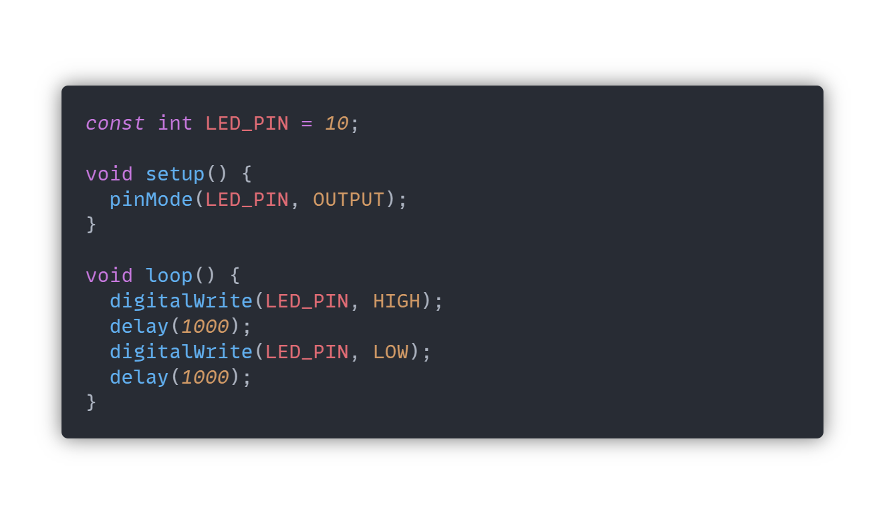
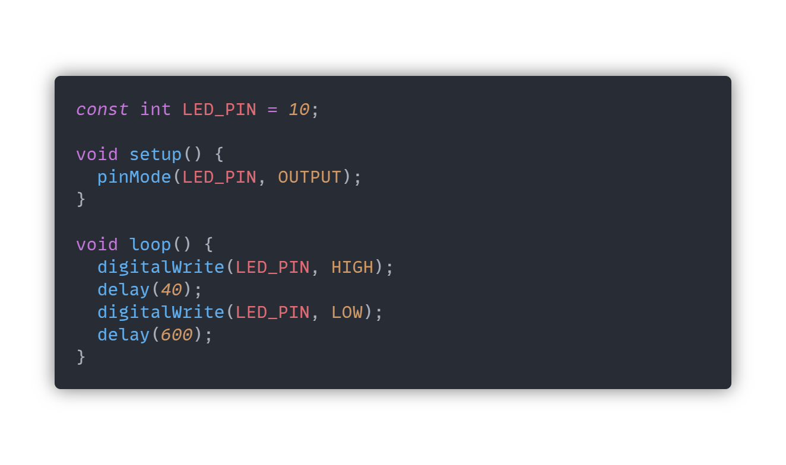
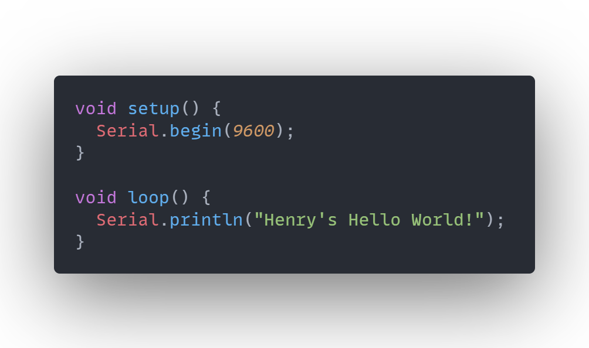
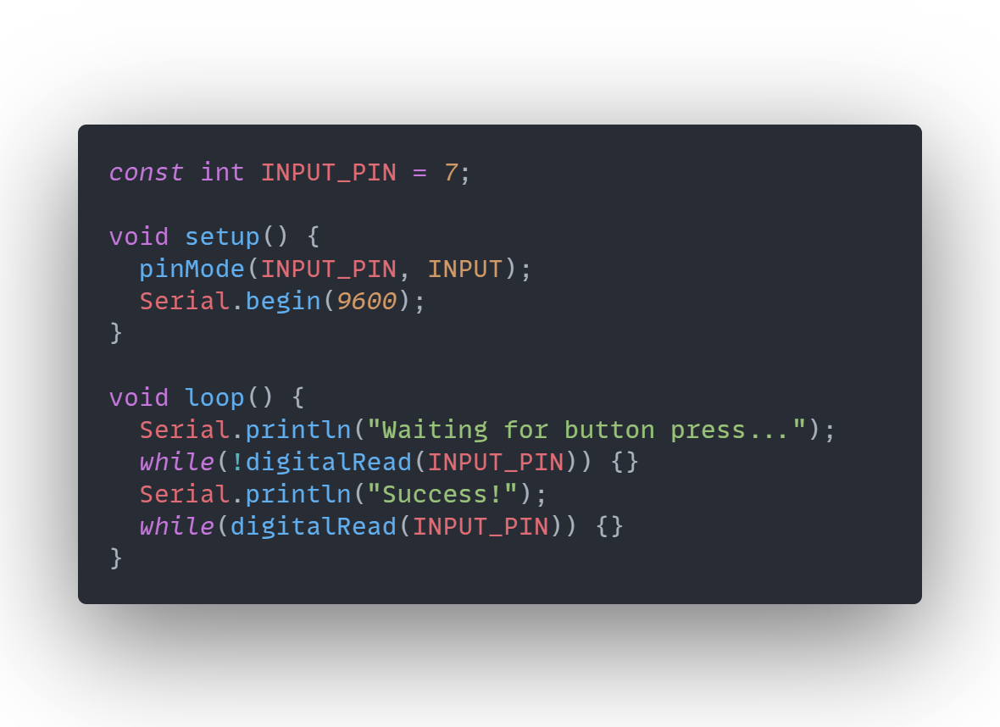
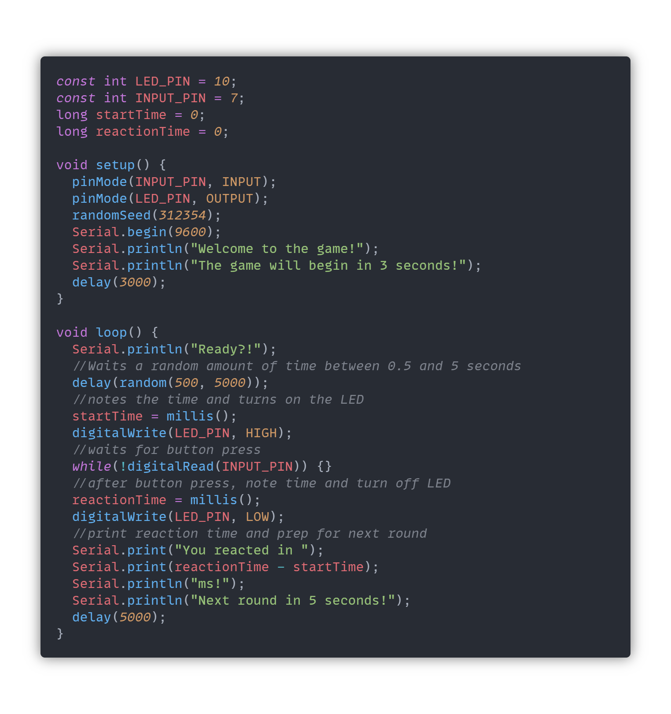

Lab 2: Digital React-I/O-n
Henry Waill - 2/14/2023
Description
This lab served as an introduction to Arduino and digital I/O. The Arduino is a popular microccontroller and is a powerful tool to learn interactive electronics. The recommended IDE for these projects is Arduino IDE, which I've opted to replace with Visual Studio Code and its Arduino extension. I like the pretty colors and I'm more familiar with the interface.
Materials
All of the materials required to complete this lab, with the exception of the multimeter, were supplied in the ELEGOO Arduino Uno Starter Kit.
- Breadboard
- Arduino (Elegoo) Uno R3 Controller Board
- USB Cable
- Breadboard Jumper Wires
- SPST Pushbuttons
- Resistors
- LEDs
- Multimeter
Part 1: Setting up the Arduino IDE
The first part of this lab walks us through the interface of the Arduino IDE and shows us how to set up one of Arduino's default examples, Blink. This program simply blinks an LED on pin 13 of the Arduino that, conveniently, has a built-in LED on the board. The following video shows the on-board LED blinking successfully.
Part 2: Blinking an External LED
Next, we looked to expand the functionality of the default Blink example by changing the LED to an external one. This is a simple change and only involves slightly modifying the default code. In the original example, we used the pre-defined LED_BUILTIN constant, which refers to pin 13. To change the pin, we opt for defining our own constant LED_PIN and initialize it with the number 10. Using a constant will allow us to refer to our LED pin multiple times throughout the program, but gives us the flexibility to change the physical pin we use at a later time without having to manual change every occurance in the code. We then replaced each occurance of LED_BUILTIN with our new constant LED_PIN and we have finished the new code:
We then need to wire an LED and a 100Ω resister in series from pin 10 to ground and the circuit is complete! Here's a video of it in action:
To change the timing of the blinking, we simply can change the values in the delay() function. I wanted each blink to be much shorter, and the interval between blinks to be slightly shorter. Here is the updated code and a video of the new circuit in action:
Part 3: Button Press and Serial Monitor
The next step of the procedure was to connect a button to one of the pins of the Arduino. Instead of writing to this pin, we will be reading the voltage at the pin in order determine the state of a new push button in our circuit. There is a known issue called the "floating pin problem," which manifests itself when a pin is read that is not connected to a complete circuit. The readings of a pin that is floating are inconsistent and cannot be relied on. This is why our push button will need either a pull-up or pull-down resistor to stabilize the readings. Here's a schematic and an image of the new circuit.

In order to better monitor the program as it's running, sometimes it helps to be able to print messages to what's called a Serial Monitor. This connection is very easy to set up and only takes a line or two of code to get up and running:
We can use the Serial Monitor to print messages when we press our new button. Using code like the following will print alternating messages when the button is pressed and when it is unpressed.
And here's a video of it in action:
In some circuits, the mechanics of the buttons can cause oscillations between states as the button is pressed. This can cause problems if not dealt with correctly. Had we run into this problem, we might have considered using various hardware and software debouncing methods.
Part 4: LED Reaction Game
The next challenge of this lab is to create a game that tests a player's reaction time. We can use the same circuit setup as last time, with the button and LED. For our game, we want the player to press the button as quickly as possible after seeing the LED turn on. This will be timed. Of course, to improve the user's experience, this will be accompanied by corresponding messages in the Serial Monitor and various delays to better pace the experience. Here's the code in its entirety (GitHub Gist at the bottom of the page), and I'll break it down further later on.
Programming this game required very few new concepts and could mostly be build from what we've already done.
At the top of the code, we create two constants to refer to the pins for the button and the LED. We also create two variables to use to track the time later in the game. In our setup, we set the pin mode of those two pins. We set a seed for our random value generation later in the program (we want the LED's to turn on after different intervals for every round.) We finally open our Serial Monitor and welcome the user to the game.
All of the game logic takes place in the loop function, which starts with a Ready?! message to indicate that the round has started. Then the program waits 0.5-5s and turns on the LED. This is where we want to start tracking how long it takes the player to react, so we set the startTime variable to the current time with the millis() function. The program waits in the while loop for as long as the button pin reads LOW, which essentially waits for the player to press the button.
When the button is pressed, the program can exit the loop and will immediately mark down the time by setting reactionTime to millis(). The program then prints some messages that let the user know how fast they reacted (by subracting startTime from reactionTime) and the whole loop starts again.
Here's a video of the game in action:
Extra Volt
The Extra Volt this week asks us to to adapt our game to be a two-player, head-to-head competition. This is a simple adaptation that relies almost entirely on the same logic of the first game. Here's the updated circuit schematic, which is essentially just doubling the circuit of the first game, and the updated code (and the GitHub Gist is at the end of the page.)
To set up this version, we add some more pins for the extra button and LED and a placeholder String to hold the winner's name (Blue or Red, in my case.) The code differs very slightly in some places; We need to turn both LEDs on and off, for example. The first main difference is that our while loop waits while both buttons are yet to be pressed instead of just one. There is also a new line directly after exiting the loop that determines which button was the first to be pressed. My code does not allow for a tie, and in a theoretical scenario when the buttons are pressed at the same exact time, the Blue player would win. I believe it would be very rare for the buttons to be pressed close enough that this case would come up. Here's a video of the new game implemented:
Conclusion
This lab didn't pose too many difficulties and it was fun to put new knowledge into practice, like with the pull-down resistors, for example. This might have been the first game I've made with an Arduino, and it makes me excited about what's to come.